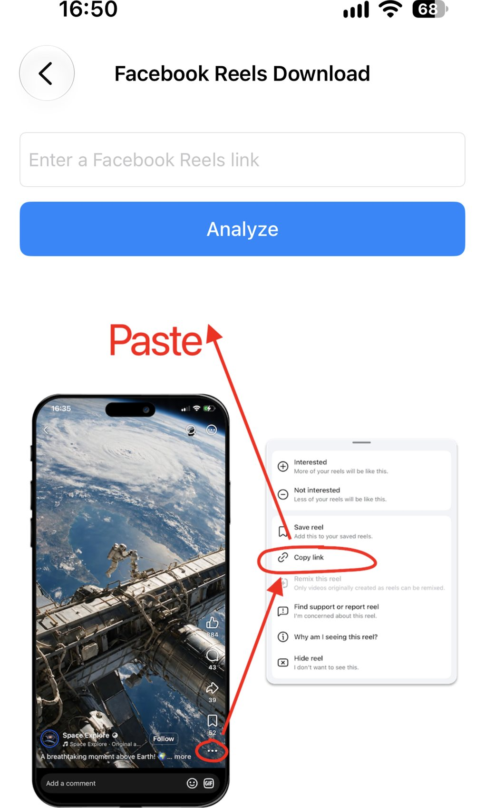
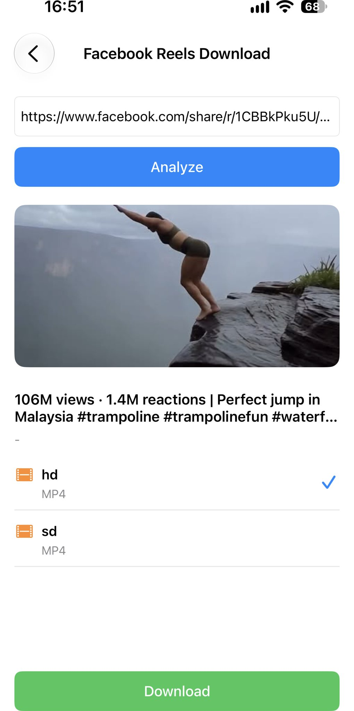

Cómo descargar Facebook Reels
¿Quieres guardar un Facebook Reel para verlo sin conexión o compartirlo más tarde? Con ImageGet es muy fácil. Pega el enlace de un Reel, la app analiza el vídeo y te permite descargarlo directamente a tu fototeca, sin grabar la pantalla y sin herramientas de terceros. Así se descargan los Facebook Reels, paso a paso.
Descarga ImageGet gratis: guarda Facebook Reels en un toque.
Descargar ImageGetPaso 1: Abre ImageGet y toca Video Download
Abre ImageGet. En la pantalla principal, toca Video Download: ahí es donde la app guarda sus herramientas de vídeo.

Paso 2: Elige Facebook Reels Download
Después toca Facebook Reels Download. ImageGet pasa al modo Reels y espera tu enlace, para que descargues el vídeo en sí y no solo la miniatura.

Paso 3: Copia el enlace del Reel
Abre la app de Facebook y busca el Reel que quieres guardar. Toca el botón ⋯ del Reel y luego Copiar enlace. En un navegador de escritorio, abre el Reel y copia la URL de la barra de direcciones.

Paso 4: Pégalo en ImageGet
Pega el enlace del Reel en ImageGet. La app analiza el vídeo automáticamente, sin buscar ni esperar. En un momento, ImageGet te muestra el Reel listo para descargar.
Paso 5: Descarga el Reel
Elige la calidad — hd para la mejor imagen, sd para ahorrar espacio — y toca Download. El Reel se guarda como vídeo en tu fototeca, con sonido. Puedes volver a verlo cuando quieras, incluso sin conexión, sin abrir Facebook.

Consejos para descargar Reels
- Descargas gratis: el plan gratuito te da 3 descargas de vídeo, compartidas entre Facebook Reels, YouTube Shorts y vídeos de X (Twitter); pásate a Premium para descargar sin límites.
- Elige la calidad: escoge hd o sd para equilibrar el tamaño del archivo y la calidad de imagen.
- Sin grabar la pantalla: ImageGet descarga el Reel directamente, así que no hay pérdida de calidad por volver a grabarlo.
- Los enlaces compartidos también sirven: una URL de Copiar enlace de la app de Facebook se pega tal cual, incluso en la forma corta facebook.com/share/r/….
FAQ
¿Puedo descargar Facebook Reels gratis?
Sí — el plan gratuito incluye 3 descargas de vídeo, que cubren Facebook Reels, YouTube Shorts y vídeos de X (Twitter). Pásate a Premium para descargar sin límites.
¿Los Facebook Reels se guardan con sonido?
Sí — los Reels se guardan como vídeos con sonido, en la calidad que elijas.
¿Tengo que grabar la pantalla para guardar un Reel?
No. ImageGet descarga el Reel directamente: no hace falta grabar la pantalla.
Verlo. Guardarlo. Sencillo.
Descarga ImageGet gratis y guarda Facebook Reels en un toque.
Descargar ImageGet